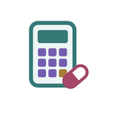

WardCalc
Bedside calculators and medicine doses from the South African Standard Treatment Guidelines (Adult and Paediatric Hospital level and Primary Healthcare), worked out from one weight. Works offline. Stores no patient information. Free.